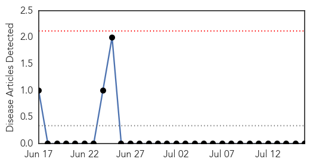
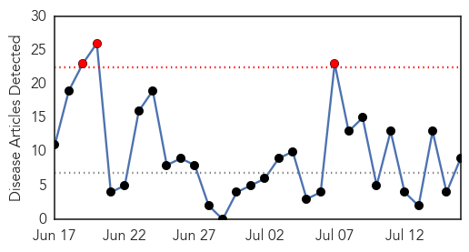
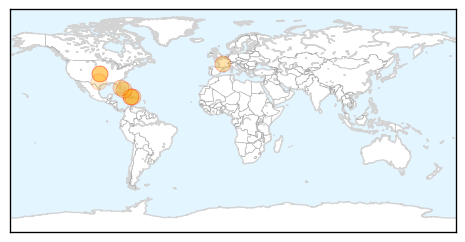
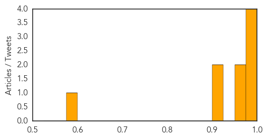

Mumps
30-Day Web Trend
0 alerts, 0 warnings

30-Day Twitter Trend
0 alerts, 0 warnings

Article Locations

Article Confidences

Top Articles:
-
No articles found for Jul 16, 2014
Top Tweets:
-
No tweets found for Jul 16, 2014
Chikungunya
30-Day Web Trend
3 alerts, 0 warnings

30-Day Twitter Trend
0 alerts, 0 warnings

Article Locations
Article Confidences
Top Articles:
- 0.998
- Chikungunya on the rise among South Florida travelers
- 0.997
- Health Ministry Investigates Suspected Imported Chikungunya Case
- 0.993
- Chikungunya fear: Health ministry renews warnings as suspected case discovered on local shores
- 0.983
- Two more chikungunya cases confirmed in Mississippi
- 0.971
- French health minister visits West Indies over chikungunya epidemic
- 0.970
- The Nassau Guardian
- 0.914
- New Chikungunya cases investigated
- 0.907
- CHIKUNGUNYA VIRUS: Palm Beach County confirms more cases of mosquito-borne disease in Florida
- 0.599
- Dogs Carry Kissing Bug Disease In Texas And Latin America
Top Tweets:
-
No tweets found for Jul 16, 2014